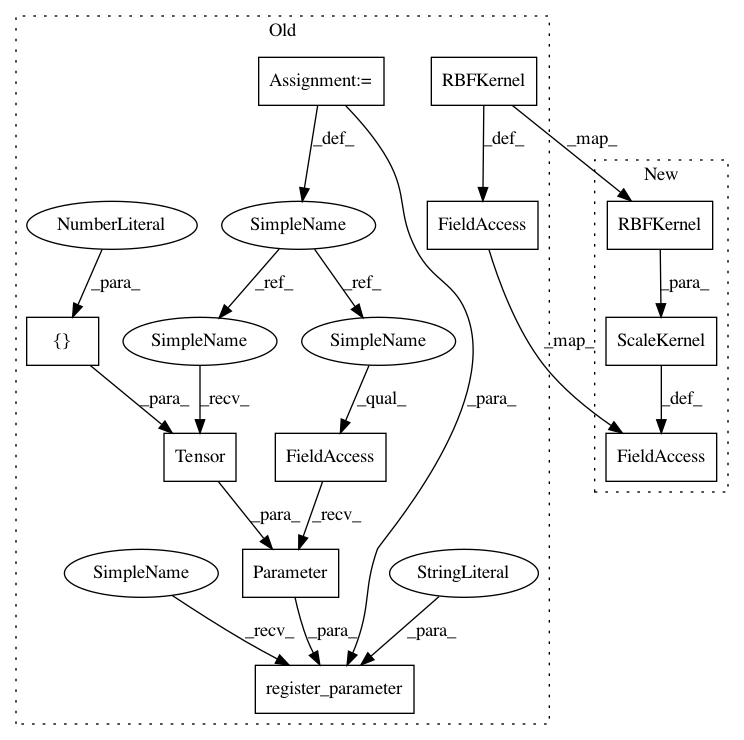

0edbd6e408ef58126353912bf5782510eec3e8f8,test/examples/test_kissgp_additive_classification.py,GPClassificationModel,__init__,#GPClassificationModel#,33
Before Change
def __init__(self):
super(GPClassificationModel, self).__init__(grid_size=16, grid_bounds=[(-1, 1)], n_components=2)
self.mean_module = ConstantMean(prior=SmoothedBoxPrior(-1e-5, 1e-5))
self.covar_module = RBFKernel(
log_lengthscale_prior=SmoothedBoxPrior(exp(-5), exp(6), sigma=0.1, log_transform=True)
)
self.register_parameter(
name="log_outputscale",
parameter=torch.nn.Parameter(torch.Tensor([0])),
prior=SmoothedBoxPrior(exp(-5), exp(6), sigma=0.1, log_transform=True),
)
def forward(self, x):
mean_x = self.mean_module(x)
covar_x = self.covar_module(x)
After Change
def __init__(self):
super(GPClassificationModel, self).__init__(grid_size=16, grid_bounds=[(-1, 1)], n_components=2)
self.mean_module = ConstantMean(prior=SmoothedBoxPrior(-1e-5, 1e-5))
self.covar_module = ScaleKernel(
RBFKernel(log_lengthscale_prior=SmoothedBoxPrior(exp(-5), exp(6), sigma=0.1, log_transform=True)),
log_outputscale_prior=SmoothedBoxPrior(exp(-5), exp(6), sigma=0.1, log_transform=True),
)
def forward(self, x):
mean_x = self.mean_module(x)
covar_x = self.covar_module(x)
In pattern: SUPERPATTERN
Frequency: 3
Non-data size: 11
Instances
Project Name: cornellius-gp/gpytorch
Commit Name: 0edbd6e408ef58126353912bf5782510eec3e8f8
Time: 2018-08-17
Author: gpleiss@gmail.com
File Name: test/examples/test_kissgp_additive_classification.py
Class Name: GPClassificationModel
Method Name: __init__
Project Name: cornellius-gp/gpytorch
Commit Name: 0edbd6e408ef58126353912bf5782510eec3e8f8
Time: 2018-08-17
Author: gpleiss@gmail.com
File Name: test/examples/test_kissgp_variational_regression.py
Class Name: GPRegressionModel
Method Name: __init__
Project Name: cornellius-gp/gpytorch
Commit Name: eafe22fb6efddf2847580af4edad087c0d9be26a
Time: 2018-08-17
Author: gpleiss@gmail.com
File Name: test/examples/test_simple_gp_classification.py
Class Name: GPClassificationModel
Method Name: __init__